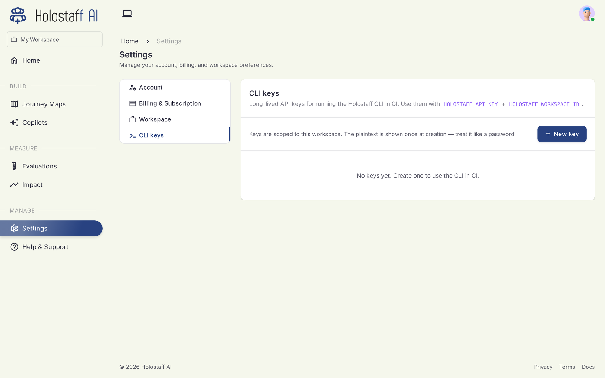

CLI Reference
@holostaff/cli is the front door: scan, refine, instrument, embed, and deploy, all from your terminal. Scan your repo, map your workflows, and create workflow autopilots your users can hand a task to.
Requires Node 20+. Running it bare opens the interactive shell; anything you type that doesn't start with / is free-form conversation with the agent.
Slash commands (interactive shell)
| Command | Purpose |
|---|---|
/scan |
Scan this repo, produce and upload the journey-map artifact |
/scan --add-repo |
Merge this repo into an existing source (multi-repo product) |
/refine |
Edit the product's identity (name, description, notes) without re-scanning |
/instrument |
Draft the SDK integration patch, show the diff, commit to a branch |
/embed |
Add the autopilot layer to your app entry, commit to a branch |
/whoami · /workspace · /login · /logout |
Auth and session utilities |
/help · /quit |
Help / exit |
Subcommands (scriptable)
| Command | Purpose |
|---|---|
holostaff |
Open the interactive shell |
holostaff scan [--quiet --json --out PATH] |
Headless scan and upload (CI-friendly) |
holostaff import NAME |
Import a preset journey map instead of scanning (import alone lists them) |
holostaff deploy [--dry-run] [--force] |
Open the deploy PR (details) |
holostaff embed |
Non-interactive embed |
holostaff login / logout / whoami / workspace |
Auth and session |
The two-phase scan
/scan publishes in two phases so you never wait on a long scan to see your map:
- Skeleton — routes, components, and workflows with stages, live in about 90 seconds.
- Deep pass — risks, handover candidates, signals, copy, brand voice; lands as a second version while you explore. The dashboard shows the source as "deepening" until it completes.
Pass 1 uploads automatically; opt out with --no-auto-upload.
What stays on your machine
/scan reads your source with read-only tools, but the uploaded artifact contains only:
- Product identity: name, one-line description, framework, language
- Routes (paths and descriptions) and component names with roles
- Customer-facing copy strings, with their file locations
- Brand voice (tone, keywords)
- Workflows and their steps
- Coverage gaps the scan flagged
Your source code, file contents beyond the excerpted UI strings, .env files, secrets, and git history never leave your machine. The trust report shows exactly what is about to be sent, before you confirm.
Auth
Interactive (default). Device flow: the browser opens, you confirm. Credentials live in ~/.holostaff/credentials.json (mode 0600).
CI. Set two environment variables and the CLI skips the file-based path:
CI keys
Generate workspace API keys in the dashboard under Settings → CLI keys. The plaintext shows once, at creation. Treat it like a password.

CI mode
Exit codes: 0 uploaded · 1 scan or upload failed · 2 bad args or missing env · 3 auth not configured.
Per-repo source binding
After the first successful upload, the CLI writes .holostaff/source.json in your repo. Later scans bind to the same source and version-bump its artifact. Add it to .gitignore if you don't want teammates' scans landing on your source automatically.